Dashboard¶
The engine serves its own web page at /dashboard/. It answers the question a log cannot answer at a glance: what is the engine doing right now, for whom, and how fast. All of it is about 45 KB of gzip for the parts every tab loads, and the box needs no Node to serve it.
Views¶
| view | what it shows |
|---|---|
| Chat | the Chat tab: a chat whose runs live on the server (chat.md) |
| Performance | the Live panel on top, then time to first token, tokens per round and acceptance over the last 5 minutes, then speed history from the usage ledger. The Recent requests chart plots decode tok/s against prompt length; a replay (the response cache, a summary written ahead) decoded nothing and is never a point there, nor in any average, percentile or live rate, and the switch lists the replays with their TTFT. Side-lane requests (0.3.27-test) are not plotted either. The y axis ends at twice the 95th percentile of the points, and a point above it is a triangle at the top edge with its value in the tooltip. The Parallel page shows every request in flight on every backend, one row each in the Lanes panel (Lanes) |
| Usage | a year of tokens as a heatmap, with totals for today, 7 days, 30 days and the year, split into input, cached input, output and reasoning |
| Dev | the live server log, filterable, with a detail view for each request; Export saves the whole log as a text file (Log export) |
| Playground | a streaming chat against the engine's own API, with tools, parameters and the figures of each answer |
| Conductor | how TandemLLM decides, and every knob of it: the live decision feed, the task classes and their policy, the classifier stages and thresholds, the session monitor's journal and rules (the tool checks' floors, project rules and reminders, the reasoning arms, the empty-turn nudges, the session tasks S1, S2 and S4 with their texts, patterns and push) and what the session tasks hold per session right now, profiles and roles (each role's contract: kind, window, preemptible, latency budget, fallback, writes, the tokenizer hash and the forms of sharing it allows), the Packages screen (G2: one list of every package, task skill, test skill, card and library skill with its kind, source, switch, general flag, the tokens of the text that goes in on the engine's tokenizer against its limit, the classes that list it and its injections, shadow notes and library picks in the last 24 h and 7 d; a search that asks the library's own index and filters by kind, class, switch and over the limit; a package's detail with its text rendered or raw, frontmatter, reference, classes, recent rows and a library skill's BM25 neighbours; inline packages edited in a Markdown editor with the token counter and the limit, a file on the box read-only or copied to an inline package; attach and detach on the router's classes, general packages first; every save checked first with its diff shown, then a new version with a note, and the versions with restore; the Library tab: each profile's retrieval switch beside the picks its shadow journaled), session timelines with the export of every hidden text, the Memory screen (the session transcripts kept on the box, a keep switch, the Markdown and JSON export, the transcript settings; a session's turn snapshots counted in its line and named in each block's runtime section with the turn's outcome (J1); the Disk cache tab: what the disk tier holds against its budget, the NVMe's free space, the hit rate, the most-hit prefixes with a preview for opencode heads and packages only, its events, its settings -- on or off, the budget in GB, the time to live, admission, the free space it keeps, at least 50 GB -- and a clear button; the admin token is asked for to read them), precision and promotion, and the eval reports: the classifier's, and the suite report of tools/tandem_eval.py with its verdict, n and the indicative label, both arms per suite. Every edit is a new config version; writes ask for the admin token when the page has no session (chat-mode.md) |
| Backends | the proxy's registry (docs/proxy.md): each backend's health, models, requests in flight and cost today; add one after a test connection, edit, delete; the key field is write-only and shows the key's last 4 characters; a field a TANDEM_* variable sets is locked and names it; the models with their public ids, output limits (empty: the provider's list, else none), prices (USD per million tokens, the list prices of the release one click away) and per-model switches; the background memory writer's switches on the form (mode auto, off, shadow or on, the spend cap a day with a no-cap box, runs a day, the prompt cap; a field a variable sets is locked), and on the backend's page the day's runs and spend, each model's resolved mode and why, and in shadow where the would-be blocks go; the ordered routing rules; the users and their keys, each shown once. With no backend it opens on Setup. On an engine without --backends it says how to turn the proxy on. Relayed requests appear in Usage (a backend and a user filter, the cost of priced models), in Dev and in Performance with a backend tag, "measured at the proxy", and "not reported by this backend" where the proxy sees nothing |
| System | the engine's settings and the box's state (memory, GPU, caches), with 30 minutes of history kept in the browser; below them the hosts: this machine with the engine's process and every backend on it, and each remote backend's machine, down to the GPU memory of its processes (docs/proxy.md) |
| Health | what is wrong, in words, and what to do about it: one sentence at the top, then a card for this TandemApp, each engine host, the plugins and the pairing codes refused lately. A card shows its checks in the order they ran, its findings worst first with the fix, and a button where TandemApp can fix it itself (Start, Rotate the token, Upgrade, Restart chatd) or can show the steps. A changed host key shows both fingerprints and how to pair again, and nothing that connects (proxy.md) |
| Setup | the Setup Guide, which picks a model and installs it; a box in setup mode opens on it (setup.md) |
The System view shows the machine behind each backend, down to the GPU memory of its processes, through a collector on the same machine or a small one on the backend's own (proxy.md).
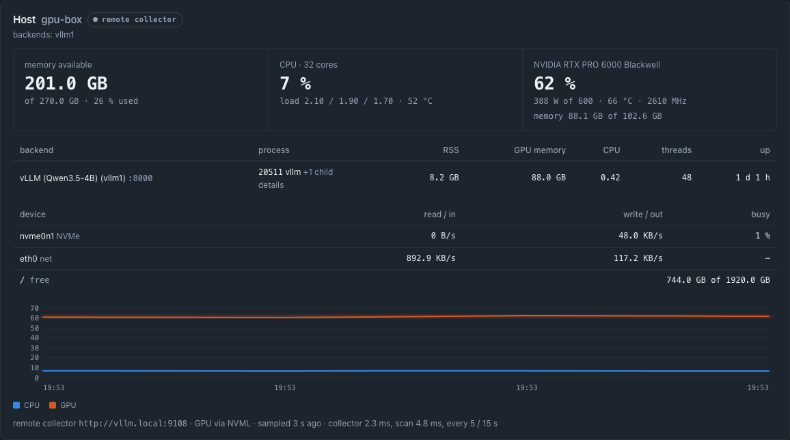
The engine card carries one neutral line, the speed check: “passed for 0.4.0 · release/speed-guard.json), “not run for this build” otherwise; the numbers are in its tooltip and on the Conductor's Compare screen. It is no warning: the speed guard is the release process's check, not something to act on in the dashboard.
The views at a glance¶
| view | what it reads | for |
|---|---|---|
| Chat | /v1/chat-app/* |
chatd's chats, runs and sandbox (chat.md) |
| Usage | /v1/dashboard/summary, /usage |
a year of tokens, cost by backend and user |
| Performance | /v1/dashboard/live (SSE), /requests, /metrics, /parallel |
the Live panel, the history, the lanes, every request at once (monitoring.md) |
| Dev | /v1/dashboard/logs, /logs/export |
the live log, filterable, and each request's detail: its timings, cache source, tokens, the conductor's decisions and why it ended; a memory-gate refusal is an error line with the allocated and reserved figures |
| Playground | /v1/chat/completions |
the OpenAI API itself |
| Conductor | /v1/conductor/* |
decisions, documents, sessions, memory (conductor.md) |
| Backends | /v1/config/* |
backends, models, prices, rules (backends.md) |
| System | /v1/dashboard/system |
settings, the memory plan, the hosts |
| Setup | /v1/setup/* |
the engine's Setup Guide: models, weights, the install job |
The nine views, in the order of the navigation rail. Chat sends messages and Setup installs a model; the other views only read, except where an edit makes a new version of a document or a configuration row.
The Live panel reads as an instrument: (1) the state line, in the server's own words, and the panel's report on its own stream; (2) the two big figures with 5-minute sparklines, each leaving the request's warm-up out and reading a dash when nothing runs; (3) tokens a round and milliseconds a round, the two factors of the engine's speed; (4) one lane per request in flight: state, client, profile, tokens split into thinking and content, time to first token, and a strip with one segment per state; (5) the newest status line, and what the agent did between two turns; (6) how each of the last 20 requests ended, in one sentence; a row opens its detail in the Dev view.
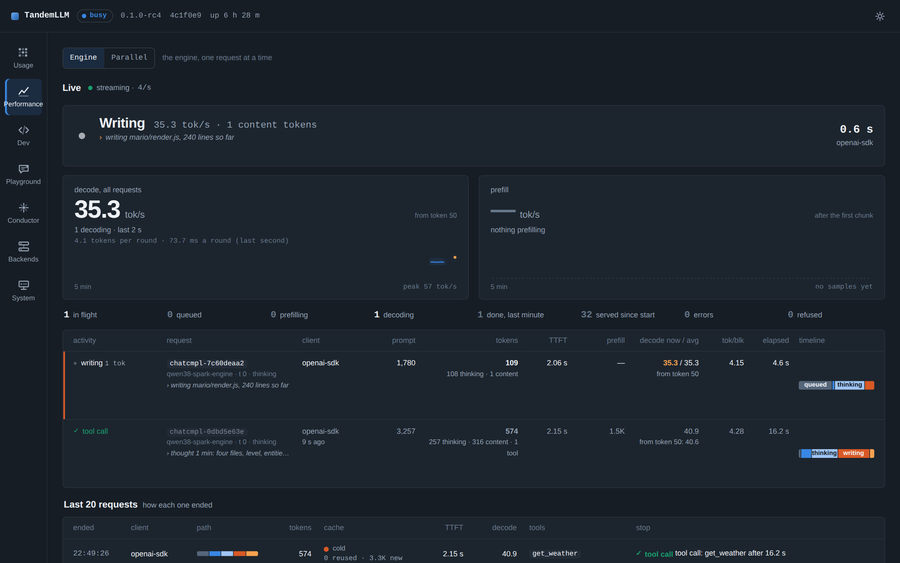
The Performance view, Engine page: the Live panel with a request writing, the decode and prefill rates, and the last requests. Demo data from the dashboard's mock server (npm run preview:mock), not a measurement.
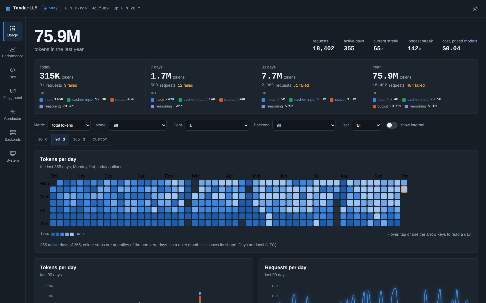
The Usage view: a year of tokens, requests and cost, filtered by model, client, backend and user. Demo data from the dashboard's mock server (npm run preview:mock), not a measurement.
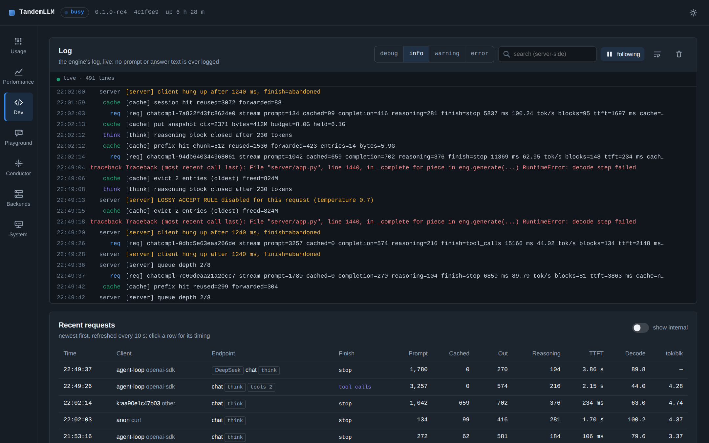
The Dev view: the live log, which never holds prompt or answer text, and the recent requests. Demo data from the dashboard's mock server (npm run preview:mock), not a measurement.
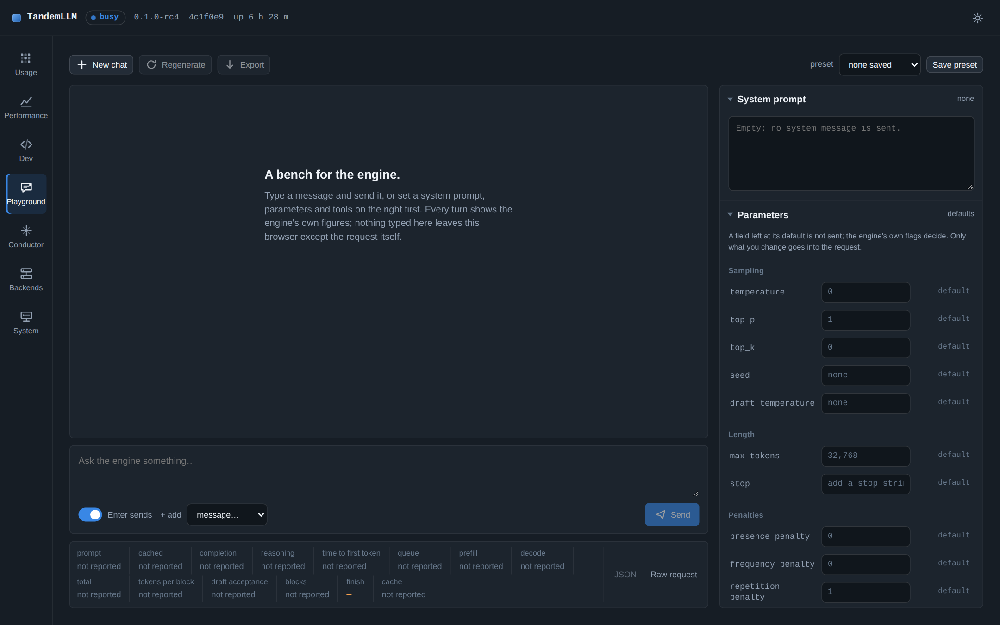
The Playground before the first message: the chat on the left, the system prompt and the sampling parameters on the right, the engine's own figures for each turn below. Demo data from the dashboard's mock server (npm run preview:mock), not a measurement.
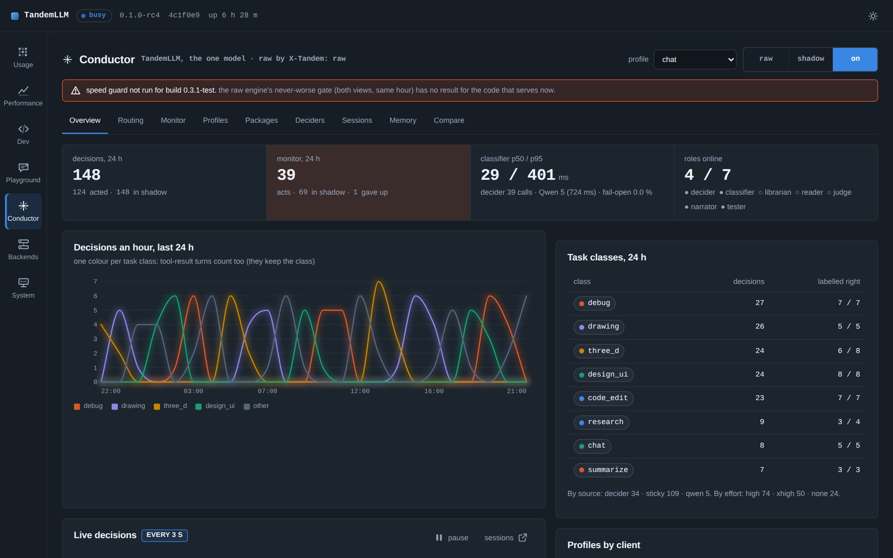
The Conductor view, Overview: decisions and the session monitor's acts over 24 hours, the classifier's latency, the roles online and the task classes. Demo data from the dashboard's mock server (npm run preview:mock), not a measurement.
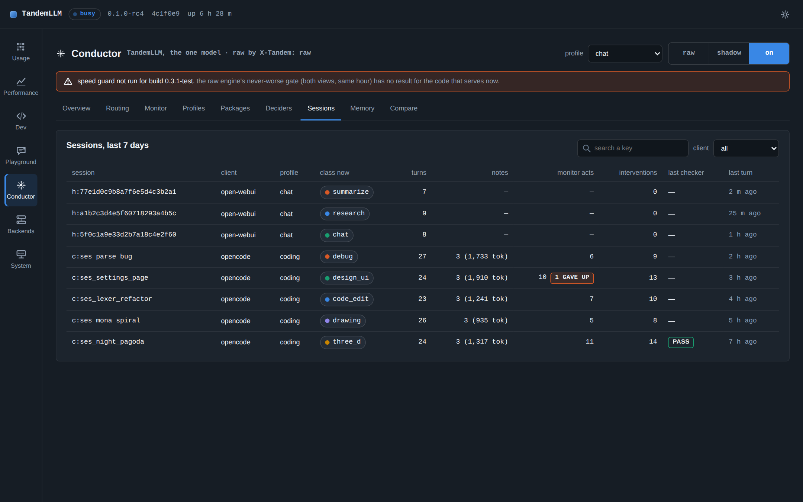
The Conductor view, Sessions: each session's client, profile, current class, turns and the hidden notes it carries. Demo data from the dashboard's mock server (npm run preview:mock), not a measurement.
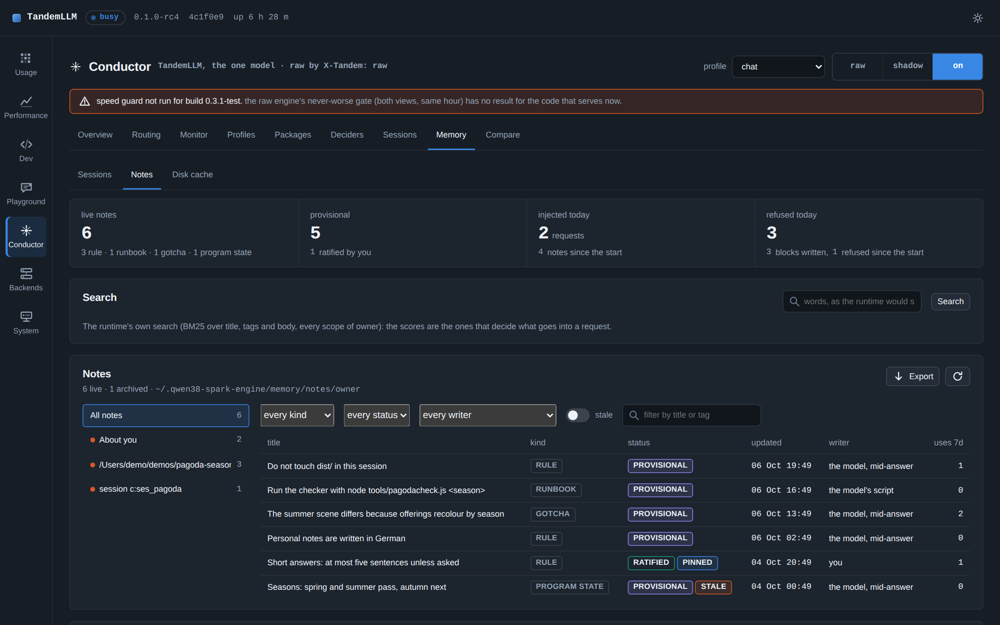
The Conductor view, Memory, the Notes tab: the live notes by scope, with kind, status, writer and use. Demo data from the dashboard's mock server (npm run preview:mock), not a measurement.
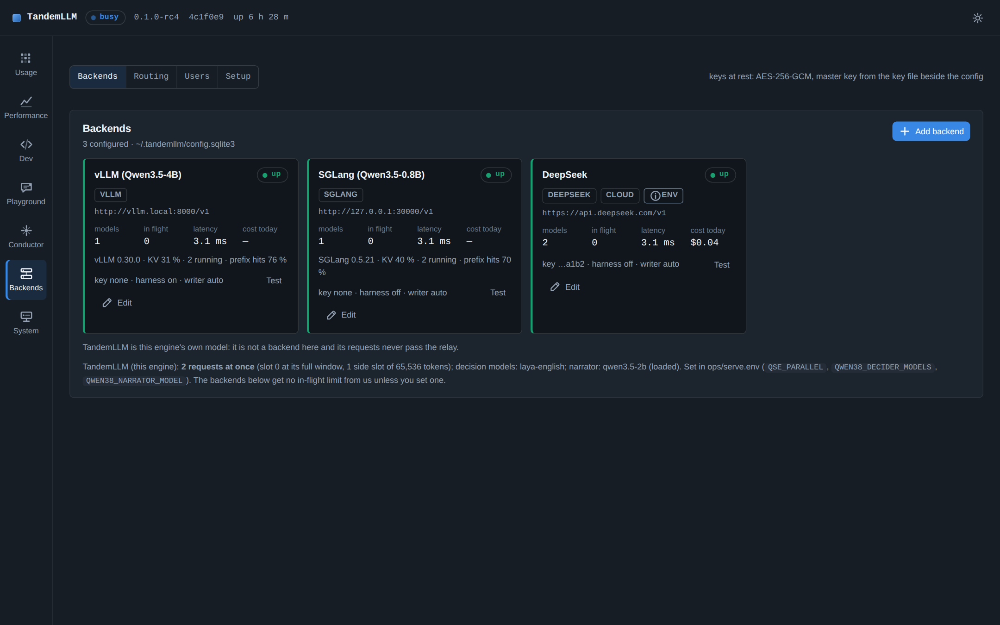
The Backends view with a vLLM, an SGLang and a DeepSeek backend, and the line for this engine's own settings. Demo data from the dashboard's mock server (npm run preview:mock), not a measurement.
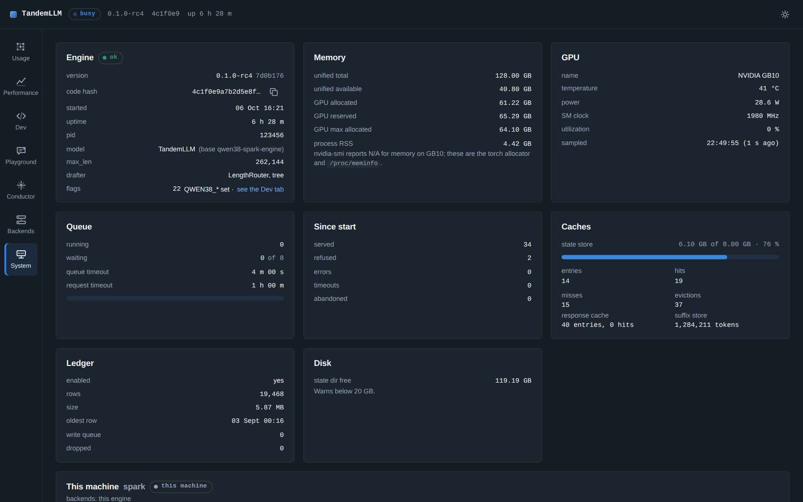
The System view: the engine, the memory, the GPU, the queue, the caches and the machine. Demo data from the dashboard's mock server (npm run preview:mock), not a measurement.
Live activity¶
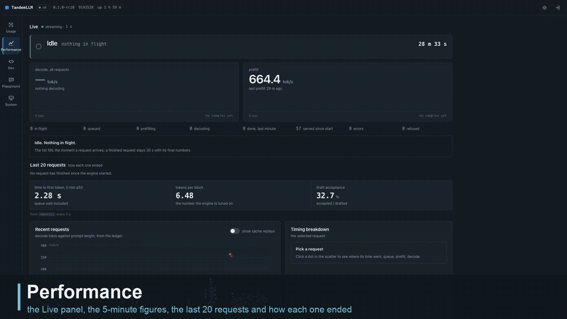
Recorded on the served engine; requests outside the demo session are blurred.
The Live panel streams GET /v1/dashboard/live over server-sent events. While a request runs it gets four events a second, otherwise one.
A line at the top says what the engine is doing now, in the server's own words:
Prefilling 36,864 of 48,210 (76 %), with the prefill rate and an estimate of the time left;ThinkingorWriting, with the decode rate and the tokens so far;Calling tool write_file, with the size of the arguments written so far;Waiting for client: running tool bash, between two turns of an agent;IdleorDraining.
When the client's socket closes while the engine still works for it, the line says so in red: "client disconnected 12 s ago".
Under the two big figures (decode and prefill tok/s, each with a 5-minute sparkline) the panel shows tokens per round and milliseconds per round over the last second. Each request in flight gets a row: its state, its client, tokens split into thinking and content, time to first token, the rates, and a timeline strip with one segment per state. When an agent sends its next turn, the row says which request it continues and what the client did in between ("continues chatcmpl-7f3a after 8.4 s, client ran bash").
A list of the last 20 requests says how each one ended, in one sentence: "abandoned by the client after 73 s of silent prefill, 0 tokens sent". Abandoned, failed, timed-out and cancelled requests get a red mark. Refused and rejected ones get an amber mark. A row opens the request's detail in the Dev view.
It also reports on its own stream, "streaming · 4/s", "no update for 3.0 s" or "reconnecting since 4 s". A silent page is never mistaken for an idle engine.
Lanes¶
The Parallel page of Performance (#/performance?tab=parallel) ends with the Lanes panel: one row per request in flight, on the engine and on every backend, kept in its place until a few seconds after the request ends. A row names the backend and the model, the engine's slot, the client and the session, the state, the tokens with the thinking part apart, the decode rate now and on average, the time to first token, the prefill rate, the cache hit, the cost so far and the time since it arrived. Its numbers come from GET /v1/dashboard/parallel (proxy.md).
Held for memory¶
A request that waits for memory before its prefill (parallel-requests.md) is shown as held, never as a hang. The server writes three lines for it (server/api/activity.py memory_lines), and the page shows them as they come:
- what the turn needs and why it waits: "This turn needs about
GiB to read new tokens; GiB is free, other turns and the caches hold of it, and must stay free for the system". When the check of its pages holds it, the line says "for its pages" and "while it reads" (0.15.4); - what happens meanwhile: chats with a higher priority ahead in the line, another chat's turn that is reading and its time left, idle cache being given back, or the time it has waited so far;
- how the wait ends: the chat continues by itself as soon as memory frees, Stop cancels it, and it gives up only after 3 h without memory, with the time left.
On the Engine page, when the request the Now line follows is held, the line reads "Waiting for memory" with the three lines in place of a rate. The request's card lists them, and in the table, which cards replace below 1,100 px of width, they are the state cell's tooltip. In the Lanes panel the state says that the request waits for memory and continues by itself, its tooltip holds the three lines, the TTFT cell counts the wait, and the prefill cell stays empty. activity.memory in the live view carries the same figures as numbers.
Where the words come from¶
Every state and every sentence comes from the server (server/api/activity.py), and the page only formats numbers. Our loop keeps the state it needs anyway, and a sampler reads it once per tick: no statement runs per token for the dashboard's sake. With the activity on and a stream open, the release gate found the text byte-identical and the round time unchanged within noise. --live-activity off turns the activity fields off; the counters and rates stay.
A tick costs 410 to 470 µs of CPU at 4 Hz. Each tick is encoded once and sends it to every open stream, and it allows at most 4 streams.
Log export (0.15.4, SRV-803)¶
The Export button is the last one in the Dev view's Log toolbar. It saves the whole log as one text file, to attach to a bug report. The file holds every line the server keeps (the newest 10,000, at all levels), whatever level and search the page shows. It starts with a header: the version, the commit, the uptime, the time of export in UTC, the line count, the time of the first and the last line, whether older lines have already left the ring, and whether --log-content is on (contract/dashboard-v1/logs-export.example.txt). Each line reads <UTC time> <level> <message>, as the copy button writes it, and a traceback stays one entry.
The file comes from GET /v1/dashboard/logs/export, under the same access rule as the log itself. The server names it tandemllm-<version>-<time>.log, takes one snapshot of the ring without the engine lock or a stream place, and leaves the ring as it was. The export adds the header and nothing else, so the file follows the log's own rule: the engine writes no prompt or answer text into its log, and it withholds an exception message that quotes the request, unless --log-content is on. The standalone proxy answers the same route from its own log with commit: unknown and log content: unknown, because it has no such flag and does not vouch for its lines.
After a save the panel shows "Saved as" with the file name and an "Open the file" link to the route, for a browser that kept no file. The next press clears that line. A browser that cannot save a file the page builds is told so and gets the same link. A server that sends no file within 60 s shows as an error, and the button can be pressed again. On a phone the toolbar wraps, so the button stays in view.
The contract¶
contracts/dashboard-v1/ holds a JSON Schema for every JSON response of /v1/dashboard/* and a valid example of each. Both sides test against it. The backend's tests validate real responses from the server. The dashboard's tests validate the examples and every response of its mock server (npm run test:contract in dashboard/). A change to a field bumps contract_version, and the contract's README lists every change. The live and session endpoints are at version 1.1.
| endpoint | what |
|---|---|
GET /v1/dashboard/live |
requests in flight, the engine's state, the last 20 stops, 5 minutes of history |
GET /v1/dashboard/summary |
totals for today, 7 days, 30 days and the year |
GET /v1/dashboard/usage |
tokens and speed per day or hour, with filters by model and client |
GET /v1/dashboard/requests |
finished requests, newest first |
GET /v1/dashboard/system |
settings, memory, caches, ledger and disk |
GET /v1/dashboard/logs |
the server log, as JSON or as a stream |
GET /v1/dashboard/logs/export |
the whole log ring as one text file with a build header (plain text, no schema) |
GET /v1/dashboard/parallel |
every request in flight on the engine and every backend, for the Parallel page: one lane each (lanes), the ones just finished (recent), each backend's figures (backends), the sums (totals), one decode sample a second per backend (series) and the engine's slots (engine_slots); ?since=<unix s> sends only the newer samples. The engine and the standalone proxy both answer it (schema, example) |
GET /v1/dashboard/metrics |
the /metrics page, for the Performance view's 5-minute figures |
GET /v1/dashboard/session |
whether an admin password is set (password_set), whether the login is on, and the session's expiry |
POST /v1/dashboard/session |
a session cookie for the admin token (only with a password set and the login on; the page has no sign-in screen yet) |
Access¶
No password¶
The dashboard asks for no password anywhere: no sign-in screen, no sign-out button, no token dialog. Open http://<host>:8000/dashboard/ and every view works, the Conductor's editors and the Memory screen (notes, transcripts, the disk tier) included. You can read and edit them straight away.
This holds while no admin password is set on the server, which is the default (server.md). Then anyone who can reach the port can read and change everything the dashboard shows:
- per-request counts and timings from the usage ledger: tokens, speeds, cache hits, finish reasons, the kind of client and a short hash of its API key;
- what runs now: each request's state, its client, the names of the tools it calls (not their arguments), and the last 20 stops;
- the server log. No line carries prompt or answer text, unless the server runs with
--log-content, which lets exception messages quote a request; - the engine's settings: its command line and every
QWEN38_*andQSE_*variable, with the home directory written as~. Variables named like a token, key, secret or password show<redacted>; - memory, GPU, cache and disk state, and the Prometheus counters of
/metrics; - the conductor's documents, the memory notes and the session transcripts, which it can also edit, archive and delete.
Keep the server on a trusted network. Never put it behind a reverse proxy that faces the internet while no password is set.
With a password set¶
Setting QSE_ADMIN_TOKEN in secrets.env and restarting turns the admin rule back on for every admin route. The dashboard has no sign-in for that yet: with the login off its read-only views keep working, while edits and the Memory screen show the server's 401 as an error, and a banner says a password is set. Unset the token and restart to open the dashboard again. API clients send the token as Authorization: Bearer <token>.
TandemLLM's own calls to itself (the router's question to the engine, client_kind internal, 0.3.43-test, VIS-60) are left out of Usage, the summary, the request counter, the model and client filters and Dev's Recent requests; the "show internal" switch on Usage and on Recent requests lists them, each with the request it served (parent_request). In the Live panel the cached share is never above the client's prompt (VIS-58): the prompt is what the client sent, and the notes TandemLLM added show as their own figure (15,957 cached · +4,625 hidden).
While the engine restarts¶
A browser that opened the dashboard before keeps working through a restart without the proxy's help (OPS-131): its service worker (dashboard/pwa/sw.js) answers a page load that gets 502, 503 or 504, or no answer, with the cached shell. The page then asks the worker (./sw-away), says the engine is restarting, polls /health every 3 s and reloads when it answers. API calls (/v1/) never go through the worker. A first visit has no worker yet and gets the proxy's answer.
The engine's status responder answers the proxy's fallback for the page meanwhile (the engine's operations.md).
Usage ledger¶
server/api/ledger.py writes one SQLite row per request: the model, the kind of client (curl, an OpenAI SDK, opencode, the dashboard), token counts, timings, draft acceptance and the finish reason. It never stores prompt or answer text. Usage and Performance read it through the dashboard API. --usage-ledger PATH turns it on, and --usage-retention-days bounds it (at least a year plus a margin, so the Usage view has its year). A benchmark server started without the flag writes nothing.
Building and testing¶
The app is written in TypeScript with Lit components and built by Vite. Its charts are hand-drawn SVG, and it loads nothing from a CDN. The built page, dashboard/dist/, is a build output and not in git; the server serves it from there. The dashboard-dist workflow (.github/workflows/dashboard-dist.yml) builds it on every pull request and push to main with npm ci and the lockfile, runs vitest and the size budget on the result, checks that a second build gives the same bundle hash, and hands the page to the jobs that package it. python3 tools/dashboard_bundle.py build does the same build on your machine and writes dist/bundle.json, the bundle's hash; docs/proxy.md ("The built page") has the fetch of a released bundle and how the server names the bundle it serves.
cd dashboard
npm ci
npm run dev:mock # the app against a mock engine, token "mock" (?mock=nologin: the login off)
npm test # unit, contract and build tests
npm run build # type-check and build dist/ (not in git)
npx playwright test # end-to-end, Chromium and WebKit, desktop and phone
A mock engine can play scenarios for the Live panel (an agent turn with a chunked prefill and a tool call, a client that leaves during a prefill, one request per stop reason) and failure modes (expired session, server errors, dropped streams). Those end-to-end suites also run against server/app.py --fake-engine, which serves the real API with a scripted engine and no GPU. dashboard/README.md has the developer details.